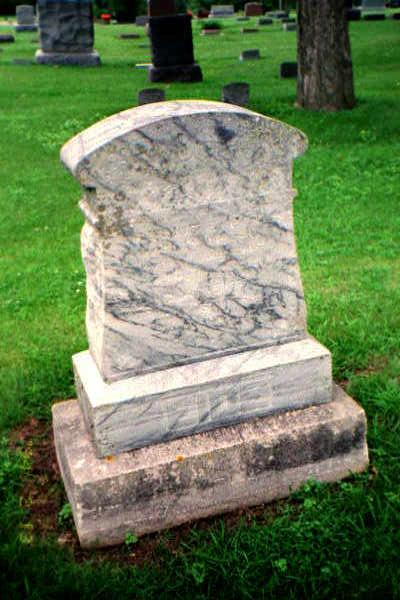

Ancestory

RASMUS ERICKSEN EIDE
Born: Eide Farm, Bomlo, Norway // December 27, 1831
Emigrated: 1857
Married: Guri Kolve // 1860 in Dane County, Wisconsin (more information about her is on the Kolve page)
Died: Forest City, Iowa // August 11, 1908
Buried: Oakland Cemetery, Forest City, Iowa
MATHIAS TORBJOERNSEN
Born: 1861
Emigrated: Date unknown
Died: Unknown
Buried: Skamokawa, Washington
INGER MARIANE TORBJOERNDATTER EIDE AXE
Born: Eide Farm, Bomlo, Norway // August 20, 1879
Emigrated: circa 1905
Married: Rasmus Andreas (Akse) Axe
Died: Astoria, Oregon // June 13, 1932.
Buried: Ocean View Cemetery; location unknown
RASMUS ANDREAS (AKSE) AXE
Inger Mariane Torbjoerndatter's husband
Born: Norway // November 3, 1871
Emigrated: Unknown
Married: Inger Mariane Torbjoerndatter
Died: Portland, Oregon // June, 1932
Buried: Ocean View Cemetery; location unknown
The following are Inger and Rasmus' children:
IDA MARIE RASMUSDATTER
Born: Bergen, Norway // 1897
Emigrated: circa 1905
Married: Paul Jenson
Died: Astoria, Oregon // 1926
Buried: Ocean View Cemetery; location unknown
AUGUSTA RASMUSDATTER
Born: Bergen, Norway // July 7, 1900
Emigrated: circa 1905
Married: Elias Iverson (who was born in Norway on July 2, 1885)
Died: Portland, Oregon September 11, 1968
Buried: Columbia Cemetery; location unknown
THORA EMILIA RASMUSDATTER
Born: Bergen, Norway // December 20, 1901
Emigrated: circa 1905
Married: Cornelias Clark
Died: Portland, Oregon // January, 1973
Buried: Portland Memorial Mausoleum, Portland, Oregon